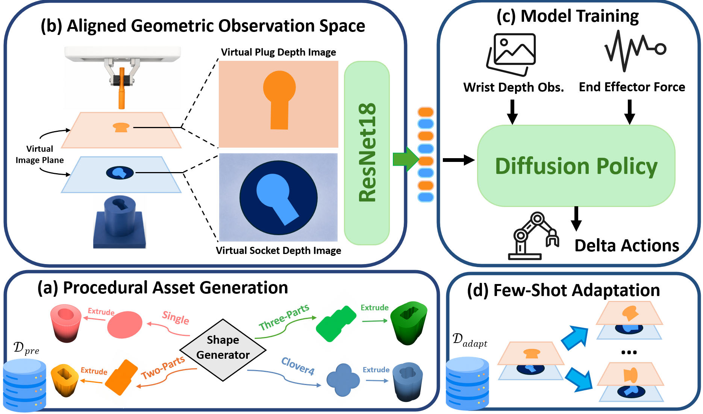
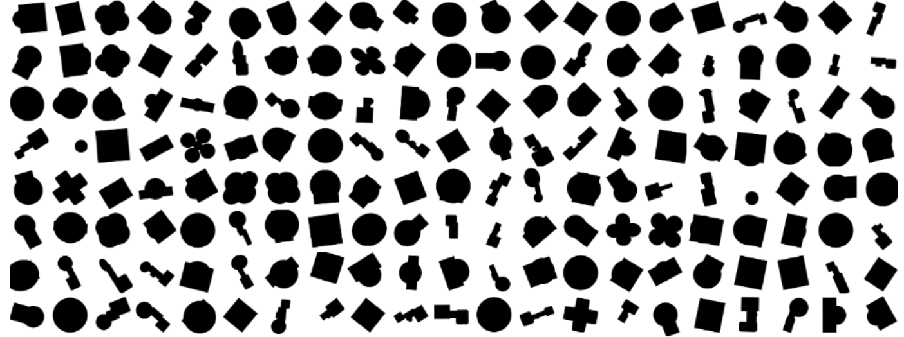
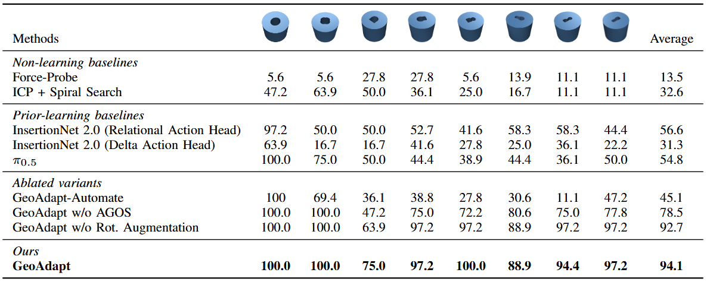

Procedural Geometries
Plug-socket interfaces are generated from randomized primitive shapes, producing asymmetric geometries with diverse rotational alignment constraints.
A framework for adapting contact-rich insertion policies to unseen plug-socket geometries with challenging rotational alignment.
Submitted to the 10th Conference on Robot Learning (CoRL 2026)
Robotic insertion tasks require precise geometric alignment despite severe occlusion and contact-rich interactions. Although recent learning-based insertion methods have achieved strong performance on standard peg insertion tasks, they often struggle to adapt to unseen insertion geometries that require precise rotational alignment.
We present GeoAdapt, a framework for few-shot insertion adaptation based on procedurally generated insertion geometries and aligned geometric observations. GeoAdapt combines a diverse plug-socket generation pipeline, an Aligned Geometric Observation Space (AGOS) that preserves rotational alignment information under occlusion, and force-conditioned diffusion policy learning with recovery-oriented demonstrations. Through simulation and real-world experiments, GeoAdapt demonstrates strong zero-shot generalization and few-shot adaptation to unseen insertion geometries.
GeoAdapt increases geometric diversity at the insertion interface, preserves plug-socket alignment through AGOS, and uses wrist depth, aligned geometric depth observations, and end-effector force feedback to predict corrective insertion actions.

GeoAdapt system overview. Procedurally generated plug-socket geometries are used for pretraining; AGOS aligns virtual plug and socket depth observations; wrist depth, aligned geometry, and force feedback condition a diffusion policy for few-shot insertion adaptation.
Plug-socket interfaces are generated from randomized primitive shapes, producing asymmetric geometries with diverse rotational alignment constraints.
Plug and socket depth observations are projected into a shared virtual frame so relative alignment remains observable even when the wrist view is occluded.
A diffusion policy conditions on wrist depth, AGOS depth, and residual end-effector force to learn insertion and recovery behaviors.
GeoAdapt procedurally constructs insertion interfaces from circles, ellipses, rectangles, rounded rectangles, and multi-part layouts. These generated assets expand beyond regular peg-in-hole tasks and expose the policy to more varied contact and rotational alignment behavior.

Examples of procedurally generated insertion interface geometries. Randomized primitive composition creates diverse asymmetric profiles with varied rotational alignment constraints.
We compare GeoAdapt, GeoAdapt w/o AGOS, and GeoAdapt-Automate across simulation and real-world insertion experiments on unseen geometries ordered by increasing rotational alignment difficulty.

Simulation Results 1: Few-shot adaptation success rates on eight unseen geometries. GeoAdapt achieves the highest average success rate across tasks compared with GeoAdapt w/o AGOS and GeoAdapt-Automate.
Browse successful GeoAdapt rollouts and failure rollouts from GeoAdapt, GeoAdapt w/o AGOS, and GeoAdapt-Automate for each real-world task. Real-world videos are played at 2x speed.
Browse successful GeoAdapt rollouts and failure rollouts from GeoAdapt, GeoAdapt w/o AGOS, and GeoAdapt-Automate for each unseen simulation task.
Citation information will be updated after release.
@inproceedings{geoadapt2026,
title = {GeoAdapt: Few-shot Peg Insertion Adaptation through Aligned Geometric Observations},
author = {Anonymous Authors},
booktitle = {Conference on Robot Learning},
year = {2026}
}